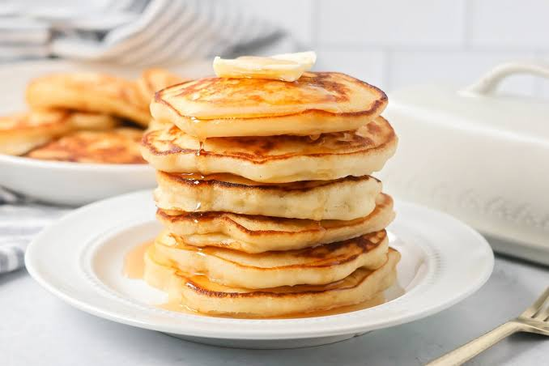

Good Old-Fashioned Pancakes
Home

Description
Hick, fluffy breakfast cakes made entirely from scratch using basic pantry
staples like flour, milk, eggs, baking powder, and a touch of sugar.
Unlike modern boxed mixes, these classic griddle cakes deliver a
nostalgic, homemade warmth and are typically served stacked with butter
and maple syrup.
Ingredients
- 1½ cups all-purpose flour
- 3½ teaspoons baking powder
- 1 tablespoon white sugar
- ¼ teaspoon salt, or more to taste
- 1¼ cups milk
- 3 tablespoons butter, melted
- 1 large egg
Steps
- Gather all ingredients.
-
Sift flour, baking powder, sugar, and salt together in a large bowl.
Make a well in the center and add milk, melted butter, and egg; mix
until smooth.
-
Heat a lightly oiled griddle or pan over medium-high heat. Pour or scoop
the batter onto the griddle, using approximately ¼ cup for each
pancake; cook until bubbles form and the edges are dry, about 2 to 3
minutes.
-
Flip and cook until browned on the other side. Repeat with remaining
batter.
- Serve and enjoy!